Langkah demi langkah mengikut peranan, berdasarkan Garis Panduan Penilaian Komponen Keberhasilan (GPPKK). Gambar diambil daripada demo; anda boleh mencuba setiap langkah di sana tanpa log masuk.
Mengikut Garis Panduan Penilaian Komponen Keberhasilan (GPPKK). Bulan ialah anggaran; admin sekolah membuka setiap fasa dan menetapkan tarikh tutup sebenar.
PYD tulis bidang tugas dan sekurang-kurangnya 5 sasaran, hantar kepada PP1.
PP semak dan sahkan.
PYD isi pencapaian, hantar.
PP1 muktamadkan markah, sahkan.
Kompetensi dibuka: PYD mula isi aras dan evidens.
PYD tanda Kekal, Pinda atau Gugur; tambah sasaran jika perlu.
PP sahkan.
PYD isi pencapaian akhir dan hantar kompetensi.
PP muktamadkan markah, sahkan keberhasilan dan kompetensi; salin skor ke e-Prestasi.
Borang dikunci. Cetak Borang Keberhasilan dan Borang Skor untuk fail peribadi.
Buka pautan myPBPPP sekolah anda dan log masuk dengan akaun moe-dl. Kerja disimpan secara automatik.
Menu Keberhasilan dibuka dengan kad tugas: apa yang perlu dibuat dalam fasa semasa, berapa yang sudah siap, dan butang langkah seterusnya. Jalur di atas menunjukkan fasa sekolah.
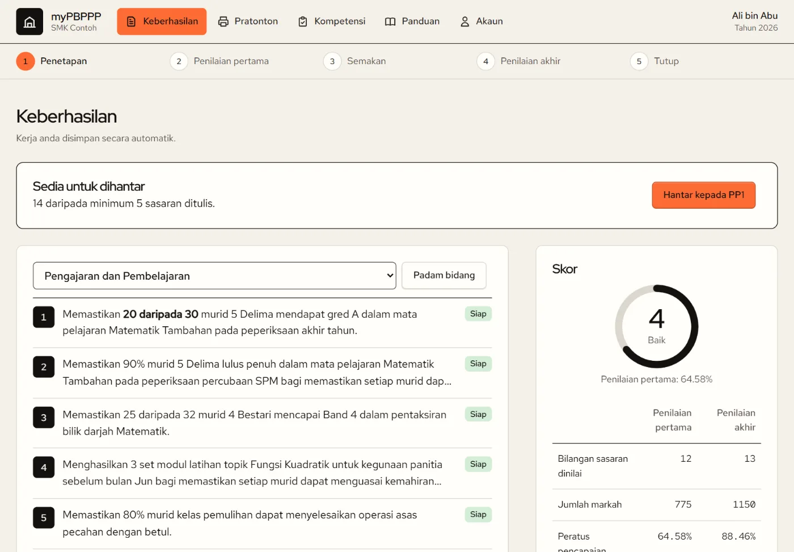
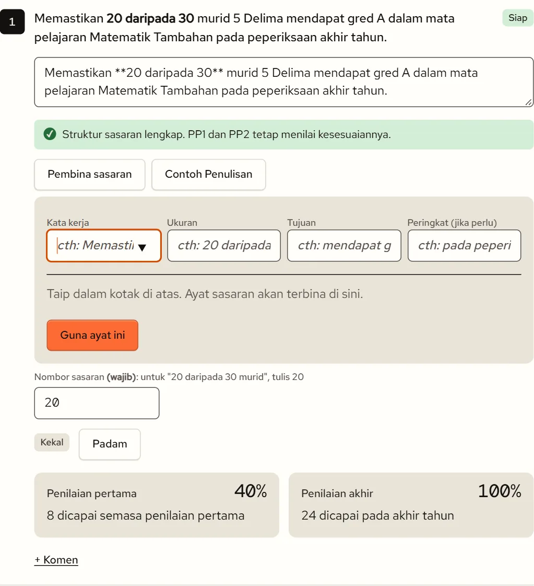
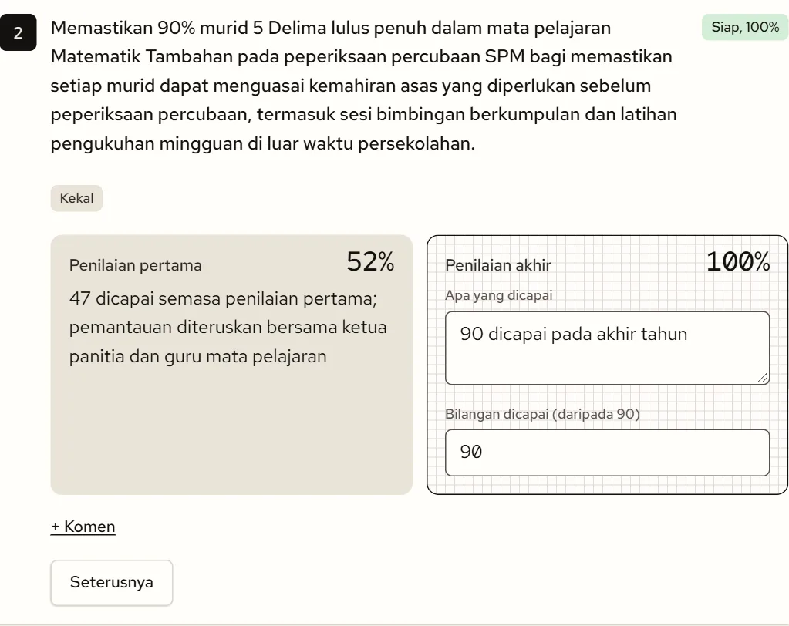
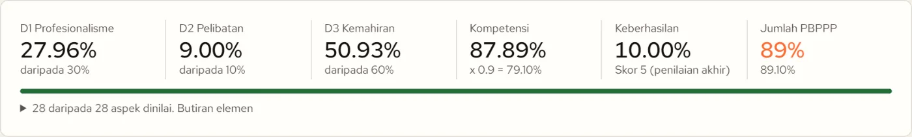
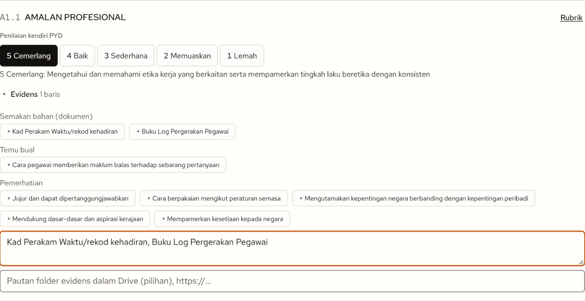
Menu Pratonton memaparkan borang Keberhasilan mengikut format cetakan. Klik Cetak atau simpan sebagai PDF. Borang Skor kompetensi dicetak dari menu Kompetensi.
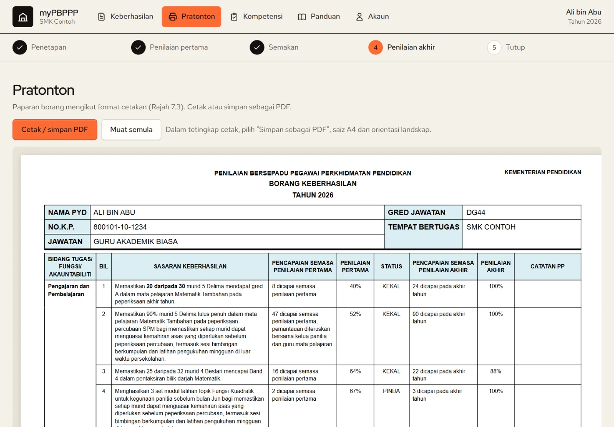
Menu Papan PP muncul jika anda PP1 atau PP2 kepada sekurang-kurangnya seorang guru.
Senarai PYD dengan kelengkapan, skor penilaian pertama dan akhir, status pengesahan dan status kompetensi. Klik Keberhasilan atau Kompetensi untuk membuka rekod.
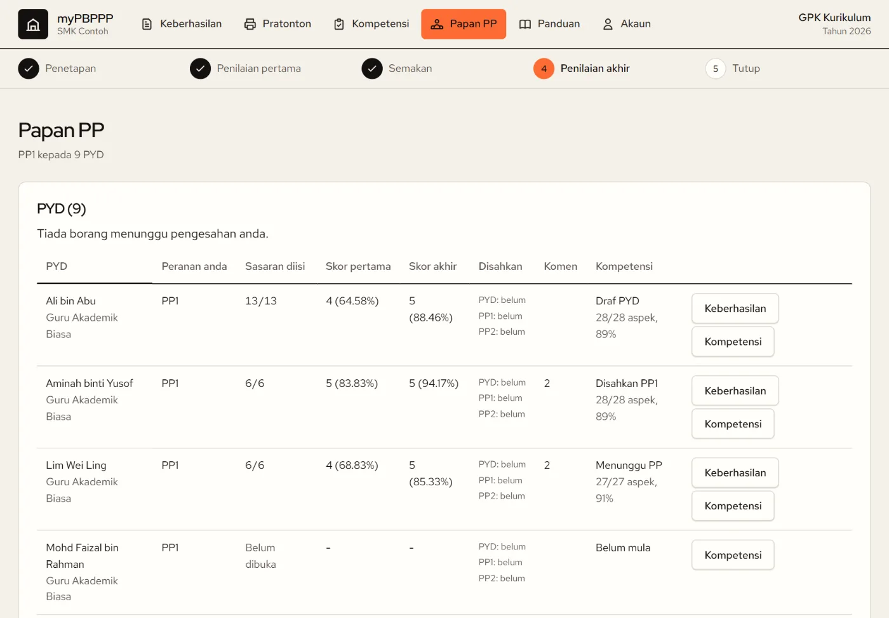
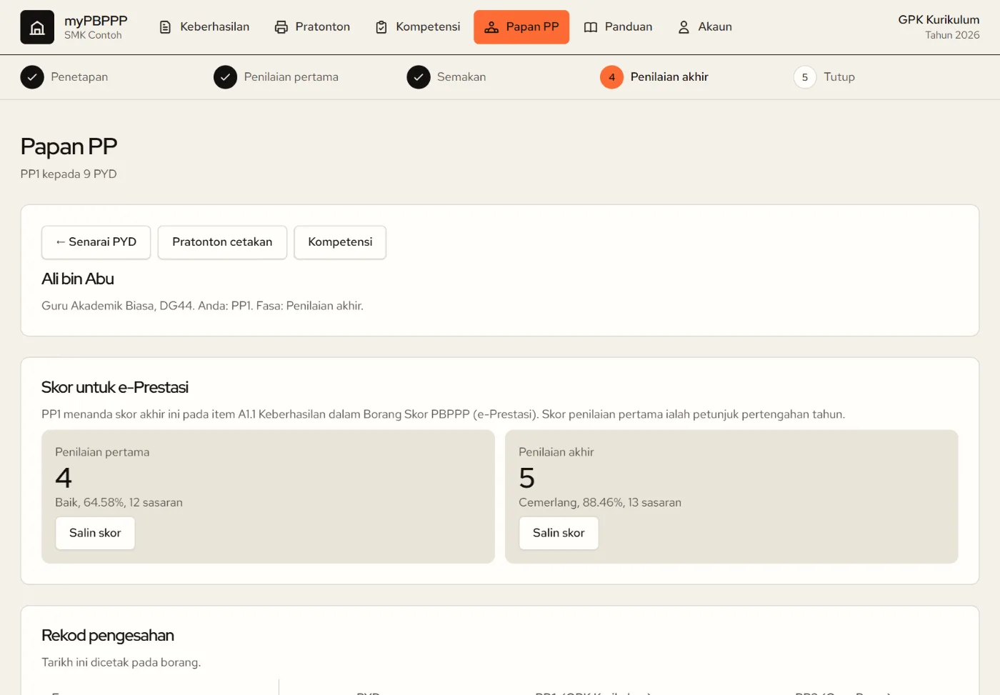
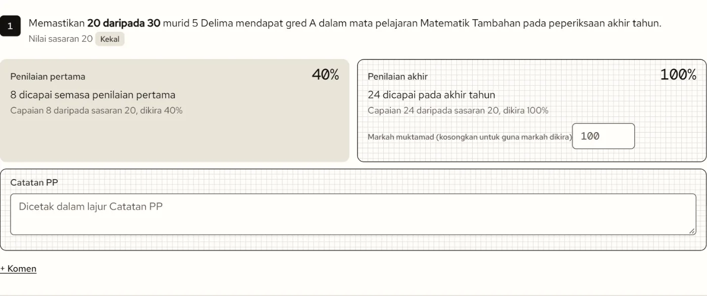
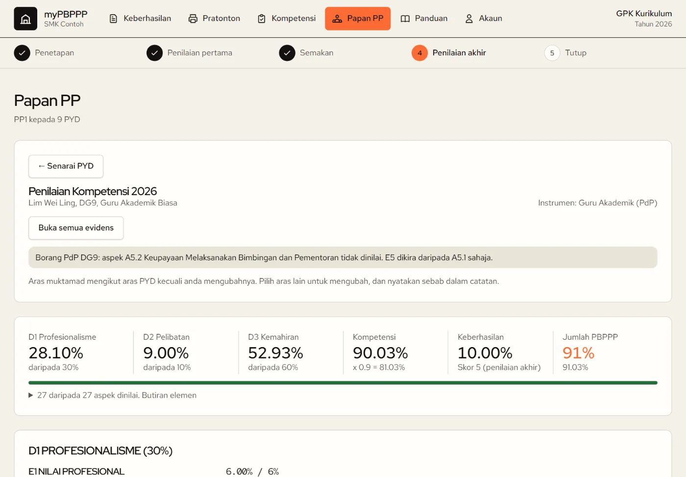
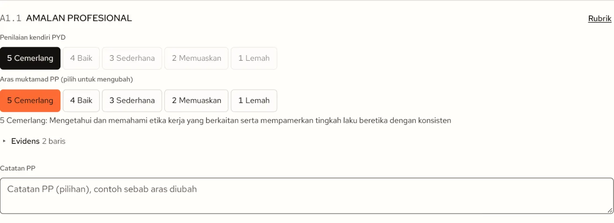
Admin ialah orang yang mengaktifkan sistem, dan sesiapa yang ditambah dalam senarai e-mel admin.
Kemajuan setiap fasa, taburan skor dan guru yang belum menghantar.
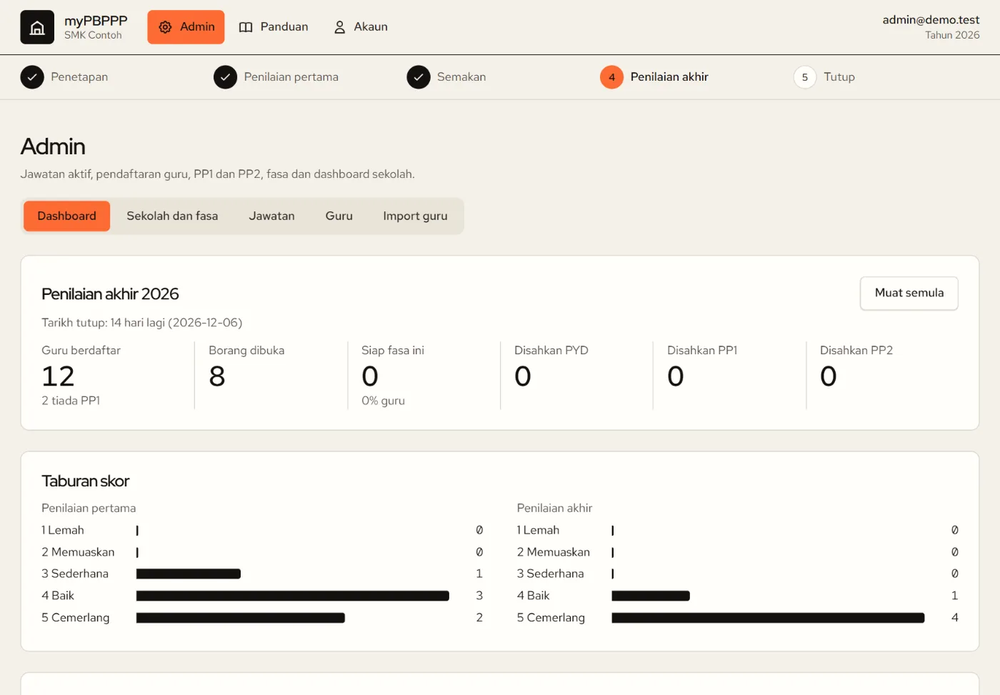
Di tab Sekolah dan fasa, klik fasa untuk membukanya (klik sekali lagi untuk mengesahkan). Tetapkan tarikh tutup untuk peringatan e-mel. Nama dan kod sekolah ditetapkan oleh pusat lesen.
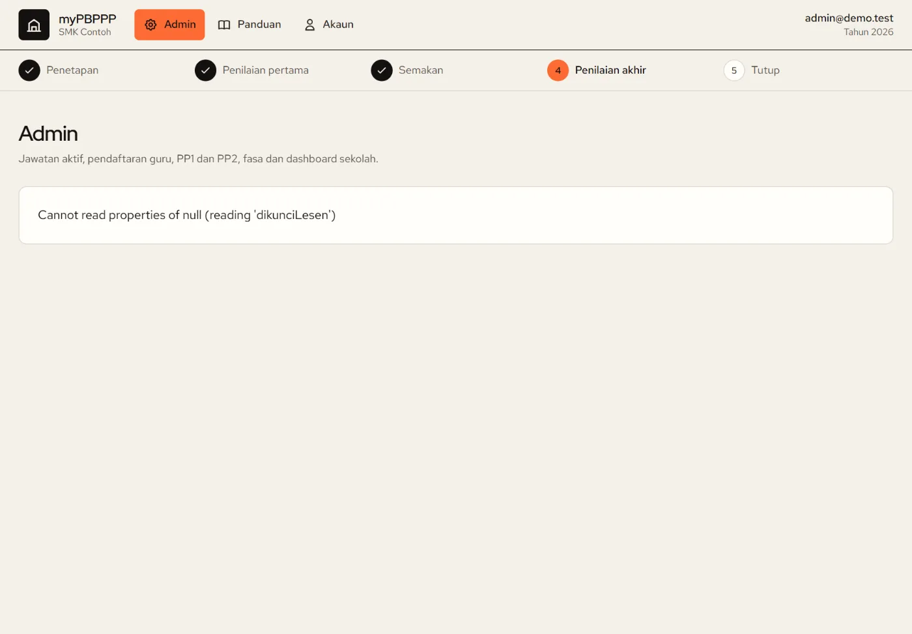
Tambah guru satu demi satu di tab Guru, atau tampal senarai dari Excel di tab Import guru (disemak dahulu sebelum disimpan). Tetapkan PP1 dan PP2 bagi setiap guru, dan tandakan jawatan yang ada di sekolah di tab Jawatan.
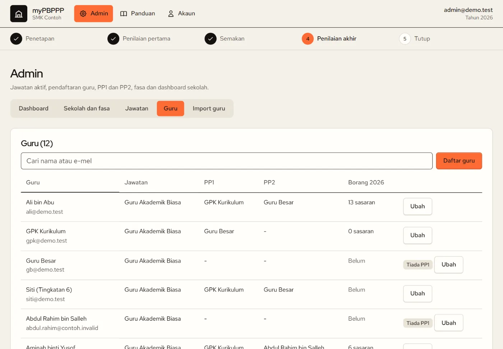
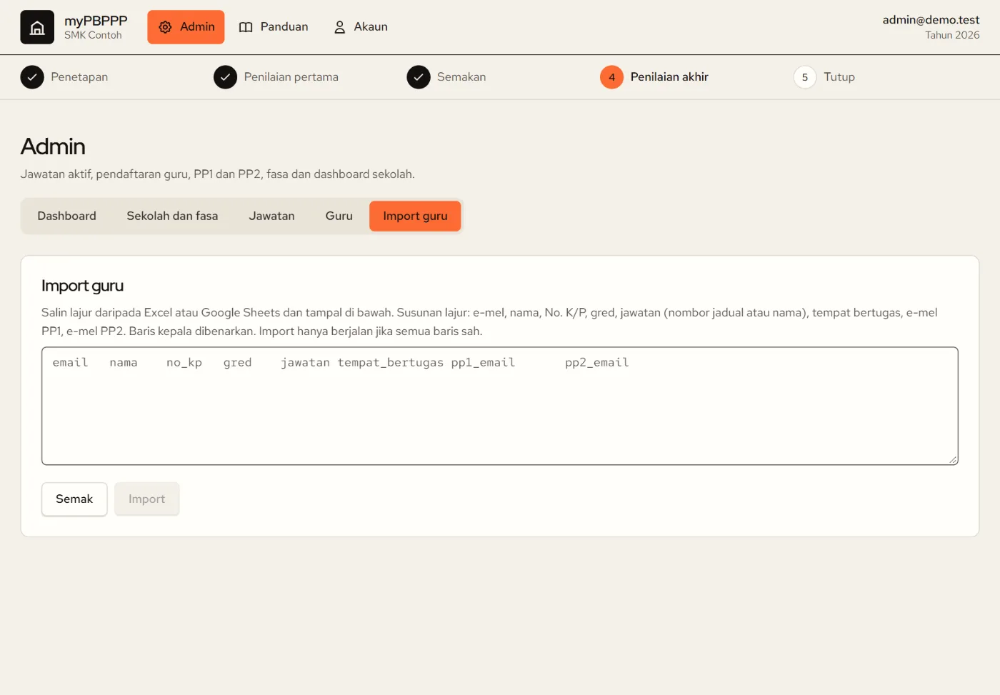
Pratonton e-mel kepada guru yang belum siap dan PP yang ada borang menunggu, hantar sekarang, atau hidupkan peringatan harian automatik sebelum tarikh tutup.
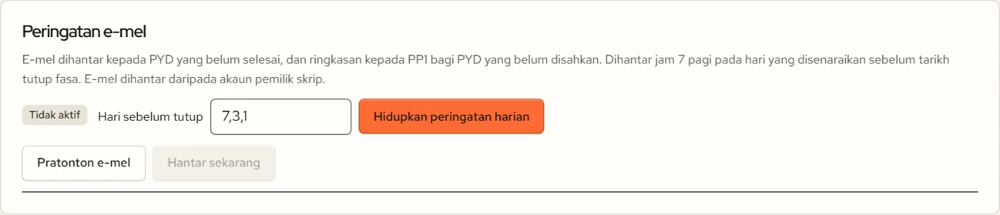
Kongsi URL web app sekolah kepada semua guru. Guru yang tidak didaftarkan oleh admin tidak boleh membuka sistem.